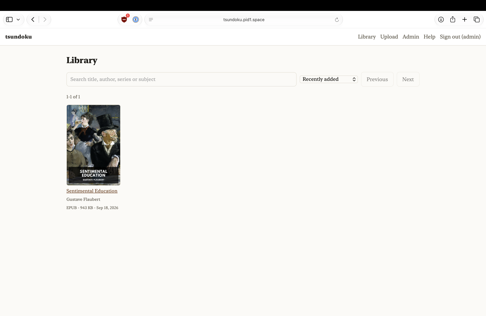
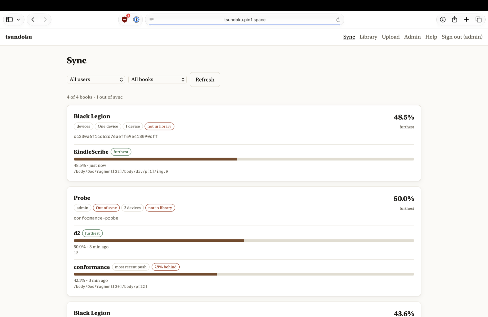
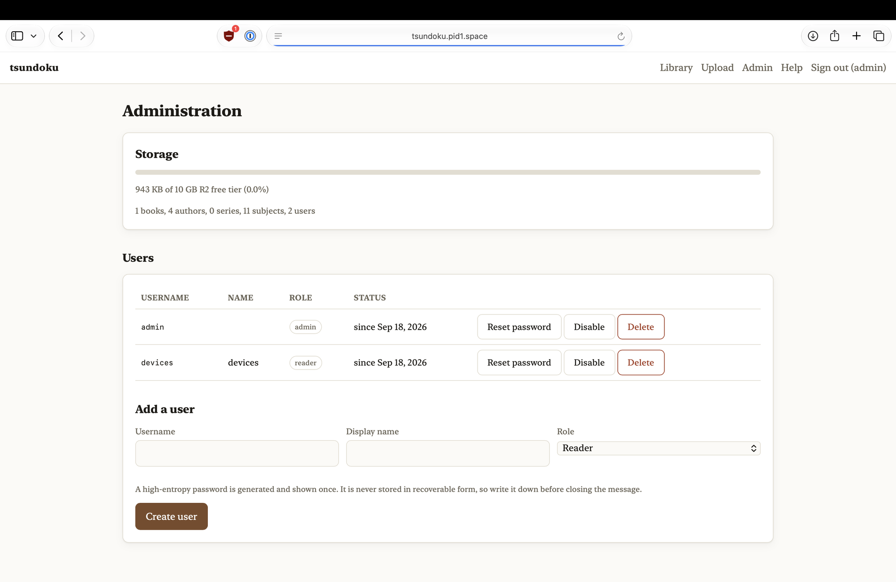

積ん読
tsundoku
acquiring books and letting them pile up unread
An OPDS 1.2 and 2.0 catalog, an authenticated upload UI, and a KOReader-compatible progress sync server.
One Cloudflare Worker, one R2 bucket, one D1 database, inside the free tier.
What it does
Browse and download
OPDS 1.2 for KOReader, FBReader, Panels, Moon+ and PocketBook; OPDS 2.0 JSON for Thorium. Covers and metadata come along.
Sync reading position
KOReader's own kosync protocol, so the Progress sync plugin needs only the base address. Every device's position on every book, and whether they actually agree.
Upload through a web UI
EPUB and CBZ have their metadata and cover art read out of the file server-side. Files over 95 MB take the R2 multipart path automatically.
Screenshots



Install
Needs Node 22+ and a Cloudflare account.
git clone https://github.com/pid1/tsundoku && cd tsundoku
npm install
npx wrangler login
./scripts/setup.sh # bucket, database, migrations, secrets, admin password
npm run deploy
setup.sh is idempotent and prints the generated admin password at the end. Write it down.
A custom domain is strongly recommended: some OPDS clients dislike workers.dev subdomains,
and TLS is non-negotiable because authentication is HTTP Basic.
Connecting a reader
| Client | Where | Address |
|---|---|---|
| KOReader — catalog | Search → OPDS catalog → + | https://books.example.com/opds/1.2 |
| KOReader — progress sync | Tools → More tools → Progress sync | https://books.example.com — the base address, no path |
| Thorium Reader | Catalogs → Add catalog | https://books.example.com/opds/2.0 |
| FBReader, Moon+, PocketBook, Panels, Aldiko | Add OPDS catalog | https://books.example.com/opds/1.2 |
On KOReader, choose Login, not Register. Self-registration is disabled and answers 403.
Set the same document matching method on every device: binary is the default and the right choice;
filename breaks the moment you rename a file.
Free tier
| Limit | Free plan | What it means here |
|---|---|---|
| R2 storage | 10 GB-month | The first ceiling. Roughly 2,000–5,000 EPUBs, or ~80 comics. |
| R2 egress | Free | Why this is on R2 and not S3. |
| Worker requests | 100,000 / day | Enormous for a household. The UI shell is static assets, which are unmetered. |
| Request body | 100 MB | Files over 95 MB upload via R2 multipart automatically. |
| D1 | 5 GB, 5M row reads/day | Nowhere near it. |
Figures read from Cloudflare's documentation on 2026-09-18. Re-check them before relying on them.
What it is not
- No DRM, no lending
- No in-browser reader
- No public catalog: every route except
/healthcheckand the login page needs credentials - No open registration: the admin creates the accounts
PLAN.md has the design reasoning, the free-tier arithmetic and the open questions.